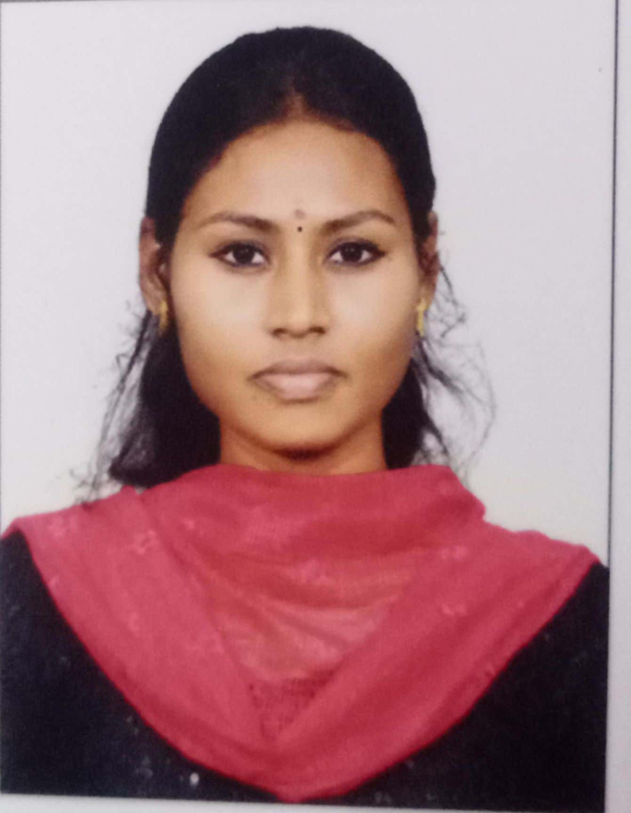

BE ECE Graduate | Aspiring Software Developer

Electronics and Communication Engineering graduate with hands-on experience in project coordination and strong interest in software development. Currently building skills in web technologies while managing an online business.
Project Management Trainee
BYD Electronics India Pvt. Ltd. | Jun 2023 – Mar 2024
Bachelor of Engineering – Electronics and Communication Engineering
2023 | CGPA: 8.5
Email: nagalakshmiselvaraj20@gmail.com
LinkedIn